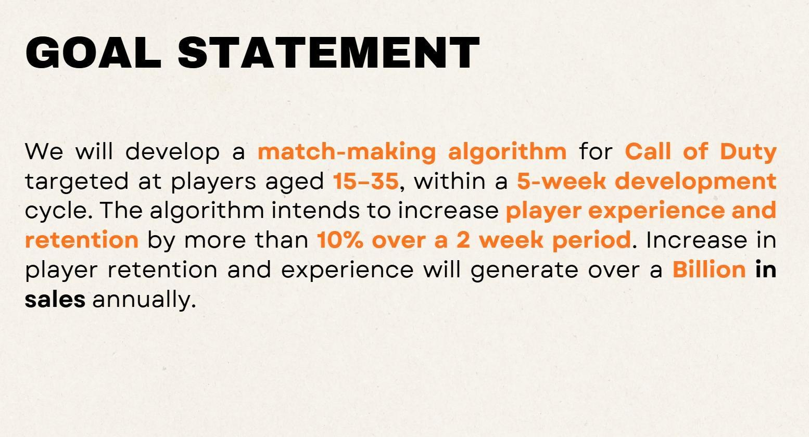
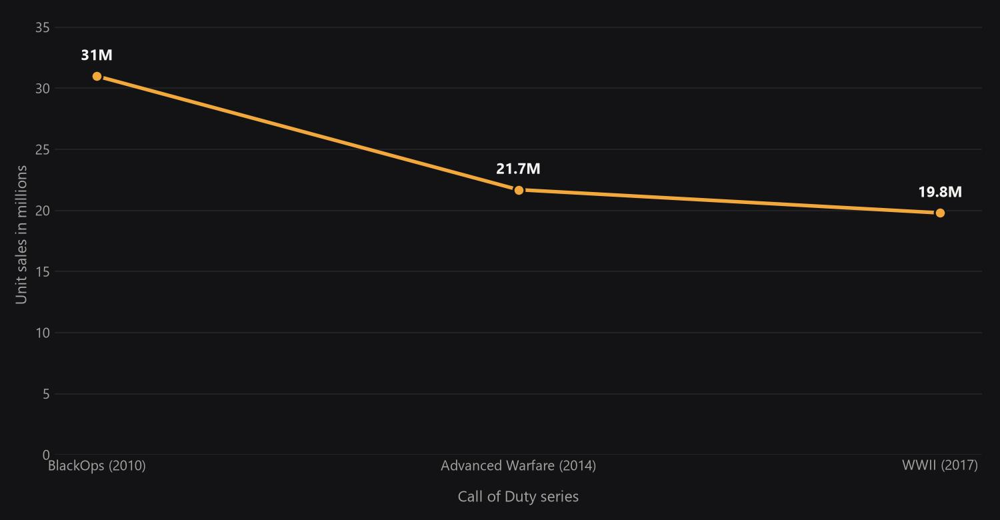
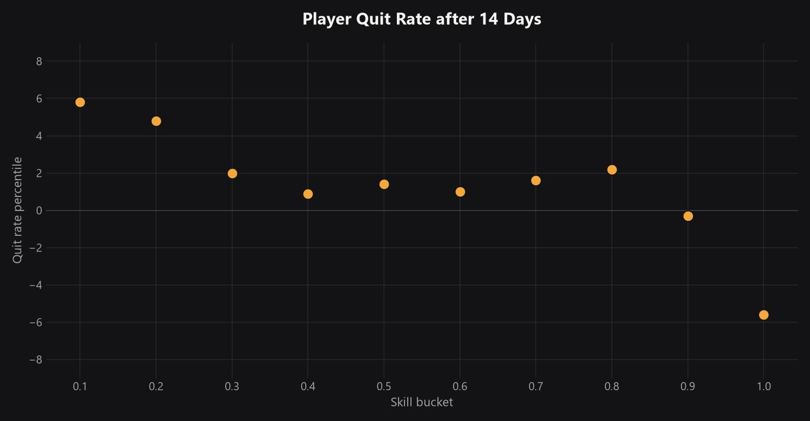
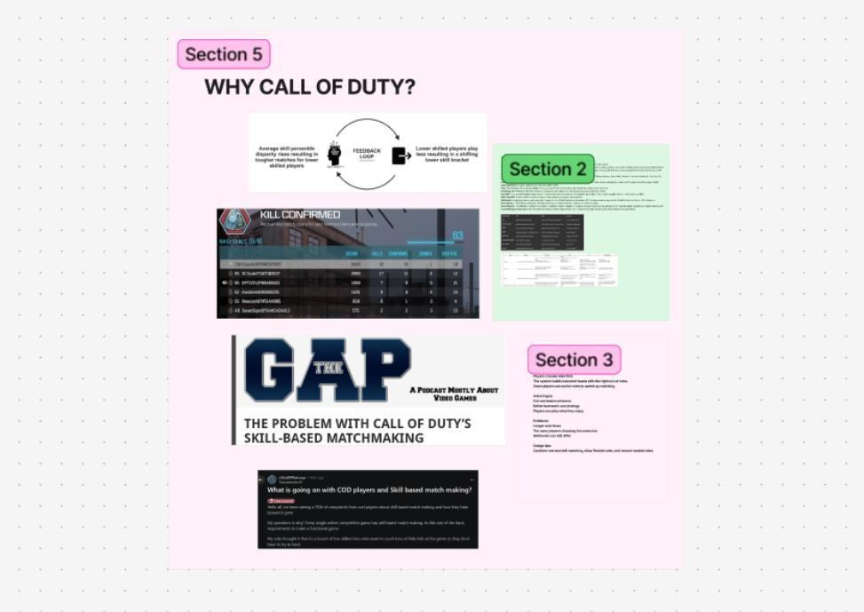
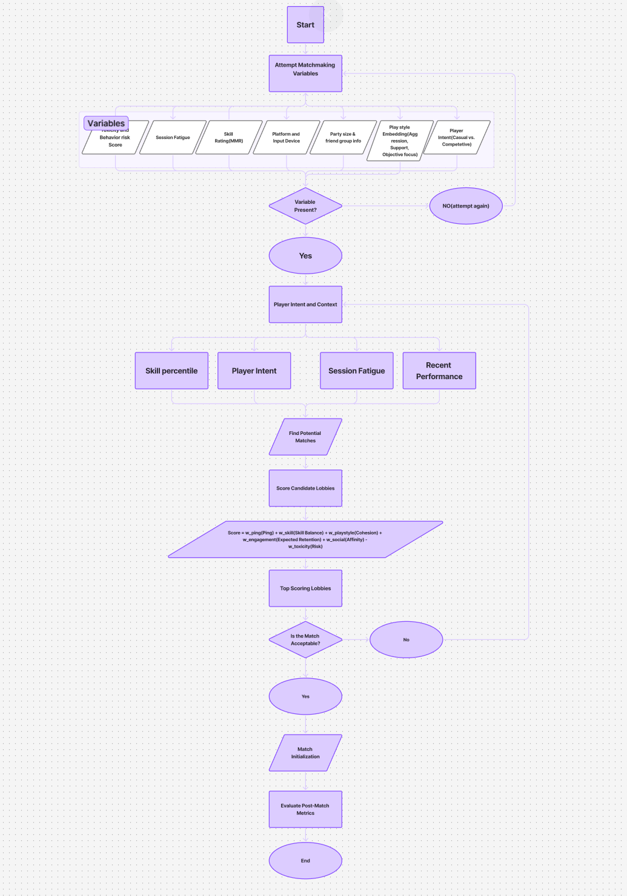

03 / Systems Research — Spring 2026
Multidimensional Matchmaking Algorithm
A research-focused project reviewing peer-reviewed papers on Call of Duty's skill-based matchmaking (SBMM) — looking for the gap between what players experience and what the system was designed to do.
The problem

An Activision-published study found quit rates rise sharply when players aren't matched on skill. That dissatisfaction shows up in the numbers too — both figures below are redrawn from public data for this project.


The proposed algorithm
A hybrid system layered on top of existing SBMM — drawing on features from competing matchmaking services to make the structure more transparent and account for more of what actually affects player experience.


